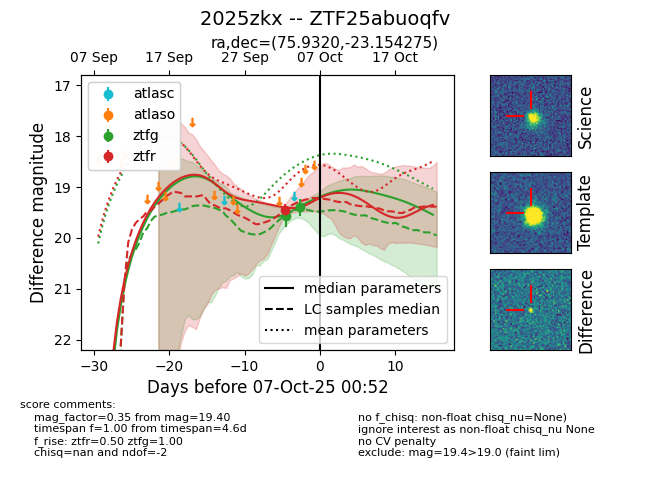
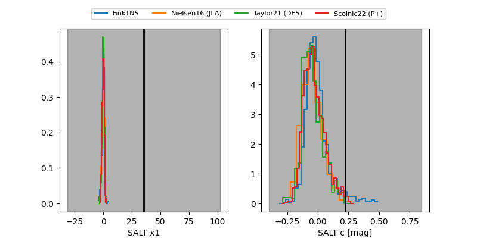

FINK: ZTF25abuoqfv
Lasair: ZTF25abuoqfv
ALeRCE: ZTF25abuoqfv
TNS: 2025zkx
YSE: 2025zkx
ZTF25abuoqfv (ztf,fink)
2025zkx (tns,yse)
equatorial (ra, dec) = (75.9320,-23.15427)
galactic (l, b) = (223.9818,-33.35834)


last ztfg=19.40, ztfr=19.45
2 ztfg, 1 ztfr detections